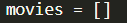
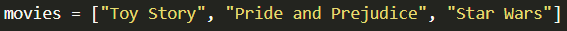
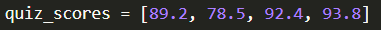
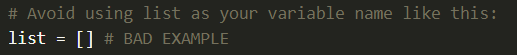
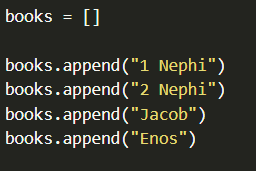
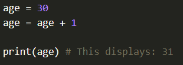
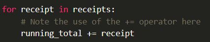

Feel free to listen to the following videos:
There are different kinds of collections in Python and other programming languages, but the most fundamental one in Python is the list. A list is simply a collection of variables, and you can put any kind of variable in a list. To declare a list, you use the square brackets "[]". If you are creating an empty list (to put items in later), you can declare it as follows:
If you want to start the list with items in it, you can put them inside the square brackets with commas in between like this:
In the example, we put strings int a list, but you could put numbers in the list as well:
Because lists contain many items, it's common to give them variable names that are plural. For example, "quiz_scores" is preferred to "quiz_score" because there will be more than one. The computer doesn't care about this, but it will make it much easier for you (and others tha may use your program) to keep track of everything.
While we have usedthe square brackets [] to create our lists, you could have written this out in a longer form using the keyword "list()", such as: "movies = list()". The square brackets are a shorthand way to type that, and are the preferred method, Because "list" is a keyword, you should avoid using it as the name of your list variable:
If you do your name variable "list", you'll see that the editor will change it's color because it thinks you are referring to the keyword. Instead, choose a variable name that is more descriptive of the kind of items that will be in the list.
Once you have a list variables, you can add items to it using the "append" function. Notive that when you use it, you'll need to use parentheses "()" afterward, just like when we have called other functions like "print" and "input".
You can add items to the end of the list, or append them, as you see below:
When you have a list of numbers, a common task is to want to find the sum of all of these numbers or the largest number, or the smallest, etc. One strategy to accomplish this is to declare a variable outside a loop that you can reference in the loop as you iterate through each individual item.
For example, the following code declares a variable "running_total" outside the list and then as it iterates through the numbers, it adds each to the running total:

We can add to a variable with code like so:
But because this is common, there is an operator that can do this in one step. This os done using the "+=" operator like so:

These two version do the same thing, but people generally prefer to use the "+=" operator because it's simpler, easy to understand, and less prone to mistakes.
With this in mind, the previous code examples could be updated to be the following:
As you may have notice in these examples, it is considered good style to put blank lines in programs to separate part of the code that perform different types of tasks. With this in mind, you should consider blank lines before and after loops, as well as after declaring list variables.